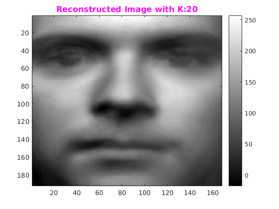
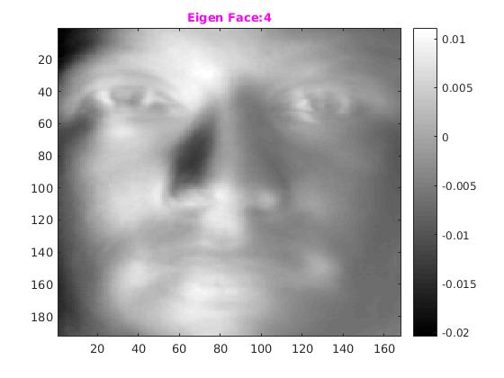
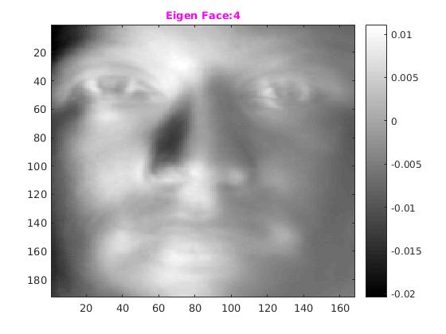

Assignment 4--2
CS-663 Group-163059009, 16305R011
Contents
Initializing: Yale Datase
Reading the yale database Read data will return train and test cell. Each cell contains data and its associated label.
yaleDirpath='../../data/CroppedYale'; [yaleTrainImgCell,yaleTestImgCell]=readData(yaleDirpath,'yale'); fprintf('Reading of images Done.\n'); row=192;col=168;
Reading of images Done.
Finding the EignFace : Yale Dateset
Size of train data set size is 40*38 images and test data size is 20*38 images. Here we are finding eigen faces of Yale Dataset. EigenFace is calculated using SVD. It returns following :
- mean vector
- normalized eigen faces
- deviated train set from its mean (Xi-X_mean)
tic
trainImgCell=yaleTrainImgCell;
[xMean,efaceNormalized,devTrainImg]=eigenFaceUsingSVD(trainImgCell{1});
fprintf('Finding Eigen Faces.Done.\n');
toc
Finding Eigen Faces.Done. Elapsed time is 22.459889 seconds.
Reconstruction of Image
Reconstructing 3rd Yale Person i.e (yaleB03), first pos,
tic person=3; devTrainVector=devTrainImg(:,person); k=[2, 10,20, 50, 75, 100, 125, 150, 175]; for i=1:numel(k) Vk=efaceNormalized(:,1:k(i)); eigenCoffs=Vk'*devTrainVector; % Re_Img=average face + (a1*eigenface 1) + (a2 * eigenface 2) + (a3 * eigenface 3) .... reconstructedImg=xMean+(Vk*eigenCoffs); figure('name',strcat('Reconstructed Image with K:',int2str(k(i)))); eigFaceImage = reshape(reconstructedImg,row,col); colormap(gray); imagesc(eigFaceImage); title(strcat('\fontsize{12}{\color{magenta}Reconstructed Image with K:',int2str(k(i)),'}')); colorbar; end toc pause(3);
Elapsed time is 1.625952 seconds.
First 25 Largest Eigen Faces
tic for i=1:25 figure('name',strcat('Eigen Face:',int2str(i))); testEigFace=efaceNormalized(:,i); eigFaceImage = reshape(testEigFace,row,col); colormap(gray); imagesc(eigFaceImage); title(strcat('\fontsize{10}{\color{magenta}Eigen Face: ',int2str(i),'}')); colorbar; end toc;
Elapsed time is 3.443036 seconds.
 
